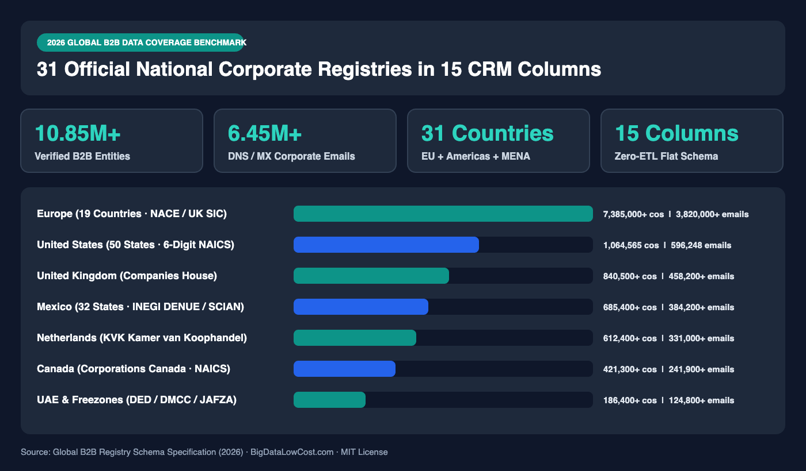
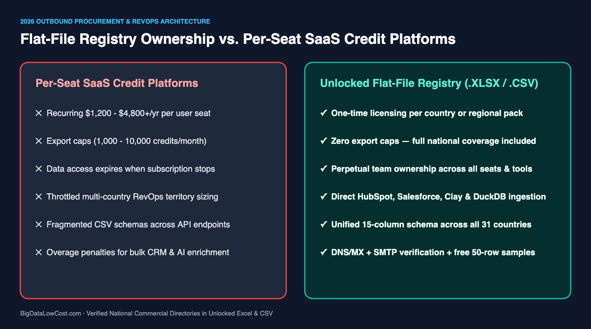
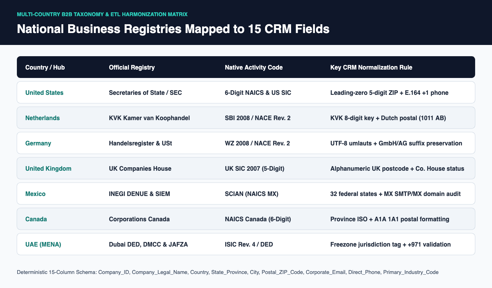

Executive Summary (TL;DR)
Cross-border revenue and data engineering teams frequently lose 40–60% of ETL preparation time harmonizing incompatible government business directories. This benchmark defines a clean 15-column flat-file schema spanning 10,850,000+ active companies and 6,450,000+ DNS/MX-verified corporate emails across Europe, North America, Latin America, and MENA, aligned with the BigDataLowCost Europe 19-country B2B registry database and the BigDataLowCost Mexico DENUE SCIAN corporate email dataset.
What Official Registries Power Cross-Border B2B Datasets?
Reliable company lists derive from statutory commercial filings rather than stale web scrapes. Key national taxonomies documented in the North American Industry Classification System and EU NACE Rev. 2 framework map across 7 priority B2B hubs:
| Jurisdiction | Primary Public Registry | Classification | Active Companies | Verified Emails |
|---|---|---|---|---|
| Europe (19 Countries) | Companies House, Handelsregister, SIRENE, KVK, BORME | NACE Rev. 2 / UK SIC | 7,385,000+ | 3,820,000+ |
| United States (50 States) | Secretaries of State & SEC EDGAR | 6-Digit NAICS & 4-Digit SIC | 1,064,565 | 596,248 |
| United Kingdom | UK Companies House Official Register | UK SIC 2007 | 840,500+ | 458,200+ |
| Mexico (32 States) | INEGI DENUE & SIEM | SCIAN / NAICS | 685,400+ | 384,200+ |
| Netherlands | KVK Kamer van Koophandel | SBI 2008 / NACE Rev. 2 | 612,400+ | 331,000+ |
| Canada | Corporations Canada | NAICS Canada (6-Digit) | 421,300+ | 241,900+ |
| UAE & Dubai Freezones | Dubai DED, DMCC & JAFZA | ISIC Rev. 4 / DED | 186,400+ | 124,800+ |

How Do Flat-File Registry Exports Compare Against Per-Seat SaaS Credits?
Per-seat SaaS credit platforms throttle bulk territory planning and charge per exported contact. Unlocked .xlsx and UTF-8 .csv flat files give RevOps, Salesforce, HubSpot, Clay, and Python/DuckDB teams full ownership of every row in the target country.


Source code & schema artifacts: PabloCirre/global-b2b-registry-schema-2026 on GitHub (MIT License).
2026 Vertical Benchmarks, Go Validator & CRM Import Specifications
Additional open-access specifications, validation libraries, and vertical taxonomy benchmarks curated alongside this 15-column standard:
- 2026 B2B Data Cost Benchmark: Annual Per-Seat SaaS vs. Perpetual Flat-File Packs
- b2b-registry-validator-2026 (pkg.go.dev) — Open Go Schema Normalizer for Manufacturing & Construction
- 2026 MedTech & Upstream Energy B2B Data Schema Architecture (Behance Showcase)
- NAICS & Dutch KVK B2B Excel Schema Importer Documentation (Read the Docs) — Open GitLab Source